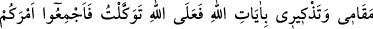
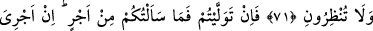
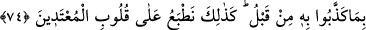

NUH (A.S.)’IN HABERİ
71. Onlara Nuh’un haberini oku. O kavmine şöyle demişti: “Ey kavmim, eğer
benim (aranızda) durmam ve Allah’ın âyetlerini hatırlatmam size ağır geldiyse bilin
ki ben sadece Allah’a dayanıp güvenirim. Siz de ortaklarınızla beraber toplanıp
yapacağınız işi kararlaştırın. Sonra işiniz başınıza dert olmasın. Sonra hükmünüzü
bana uygulayın ve bana mühlet de vermeyin.”
72. “Eğer yüz çevirirseniz, bilin ki ben sizden bir ücret istemedim. Benim ücretim
ancak Allah’a âittir. Bana müslümanlardan olmam emredilmiştir.”
73. Yine de O’nu yalanladılar, Biz de O’nu ve onunla beraber gemide bulunanları
kurtardık. Onları halifeler yaptık ve âyetlerimizi yalanlayanları da boğduk. Bak
işte o uyarılanların sonu nice oldu!
74. Sonra onun ardından bir çok peygamberi kendi toplumlarına gönderdik, onlara
mûcizeler getirdiler. Fakat onlar önce yalanladıkları şeylere inanacak değillerdi.
İşte biz, haddi aşanların kalplerini böyle mühürleriz.
“Onlara” yani Mekke halkının müşriklerine, içinde bulundukları küfür ve inattan
vazgeçmeleri için “Nuh’un haberini oku.” Nuh ile kavmi arasında geçenleri oku.
el-Bostan’da şöyle denilir: Nuh’un adı Şakir idi. Allah korkusundan dolayı çok
ağlayıp sızladığı için ona “Nuh” adı verildi. Nuh (a.s.), bazı hükümleri nesh edip bazı
dînî kurallarla emrolunan ilk peygamberdir. Ondan önce kız kardeş ile evlenmek
helaldi, O’nun devrinde haram kılındı. Allah onu dört yüz seksen yaşında iken
peygamber kıldı.